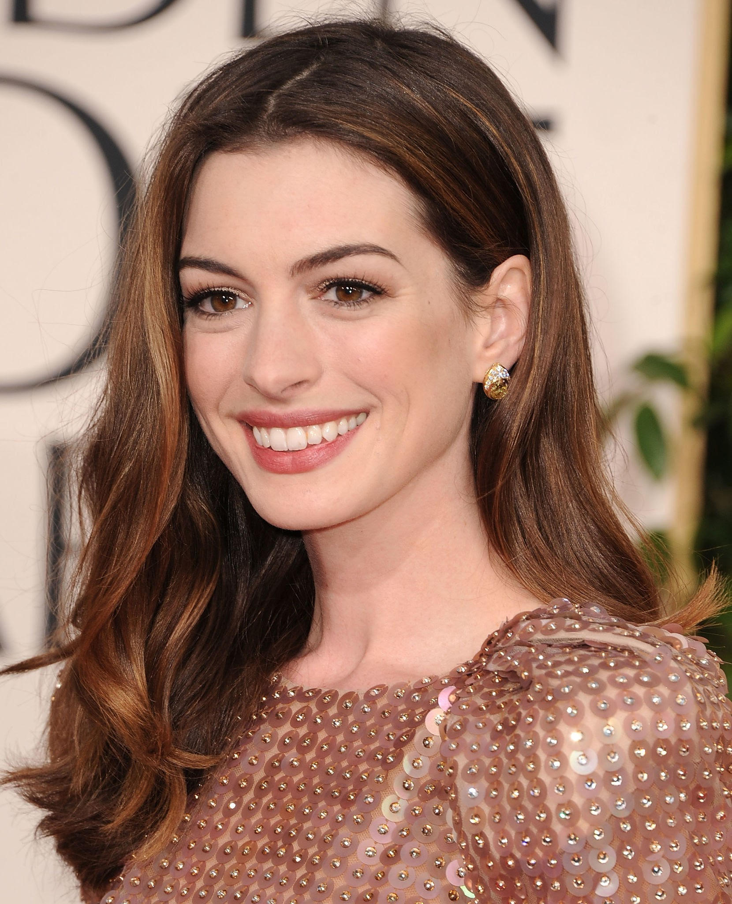

Elenco de Interstellar
Elenco
Matthew David Conaughney
Biografia de Matthew McConaughney
- Ator, Produtor, Produtor Executivo.
- Nacionalidade: Americano.
- Nascimento: 4 de novembro de 1969 (Uvalde, Texas, EUA).
- Idade: 53 anos.
- Matthew interpreta Joseph Cooper.
Jessica Chastain
Biografia de Jessica Chastain
- Atriz e Produtora.
- Nacionalidade: Norte-Americana.
- Nascimento: 24 de março de 1977 (Sacramento, Califórnia, EUA).
- Idade: 46 anos.
- Jessica interpreta Murphy Cooper.

Anne Jacqueline Hathaway
Biografia de Anne Hathaway
- Atriz.
- Nacionalidade: Norte-Americana.
- Nascimento: 12 de novembro de 1982 (Brooklyn, Nova York, EUA).
- Idade: 40 anos.
- Anne interpreta Amelia Brand.
 Timothée Hal Chalamet
Timothée Hal Chalamet
Biografia de Timothée Chalamet
- Ator.
- Nacionalidade: Franco-Americano.
- Nascimento: 27 de dezembro de 1995 (Hell's Kitchen, Nova York, EUA).
- Idade: 27 anos.
- Timothée interpreta Tom Cooper.
 Matthew Paige Damon
Matthew Paige Damon
Biografia de Matt Damon
- Ator, Roteirista, Produtor e Filantropo.
- Nacionalidade: Norte-Americano.
- Nascimento: 8 de outubro de 1970 (Cambridge, Massachusetts, EUA).
- Idade: 52 anos.
- Matt interpreta Dr.Mann.
Wesley Cook Bentley
Biografia de Wes Bentley
- Ator.
- Nacionalidade: Norte-Americano.
- Nascimento: 4 de setembro de 1978 (Janesboro, Arkansas, EUA).
- Idade: 44 anos.
- Wes interpreta Doyle.
David Kwaku Asamoah Gyasi
Biografia de David Gyasi
- Ator.
- Nacionalidade: Britânico.
- Nascimento: 2 de janeiro de 1980 (Hammersmith, Londres, Reino Unido).
- Idade: 43 anos.
- David interpreta Romilly.
Topo da Página